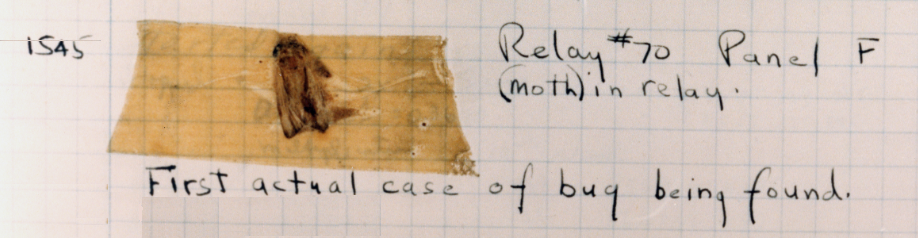

Open source software communities use documentation to enhance the software they produce in part via issue and/or bug trackers. When software doesn’t perform as you’d expect, users might file a report. They can report inaccurate documentation, suggest new software features, report a bug, or note a potential security hole in a piece of software by filing an issue report.
Issue trackers are a common component of platforms like GitHub for working together on open source software projects. Other stand-alone bug trackers and issue trackers include Bugzilla 1
. All serve the same purpose, namely tracking bugs and issues like new feature requests.
Subsection6.4.1Issues and Bugs, Oh My!

Figure6.4.1.First Actual Bug In any given OSS project, you might encounter terms like, issue, bug, defect, etc. In the broader context of OSS, these terms are often used interchangeably, but they can have slightly different connotations depending on the specific project and its development practices.
An issue typically refers to any problem, request, or task that is tracked and managed within the project’s issue tracking system. While issues can include bugs and defects, they are not limited to technical problems alone. Issues can encompass a wide range of things, including feature requests, bug reports, documentation improvements, or even general discussions about the project. They serve as a centralized way for contributors and maintainers to communicate and collaborate on various aspects of the project.
A bug is when software produces problematic results. Bugs cause unintended behaviors that deviate from the expected or specified functionality. Bugs can arise due to programming mistakes, logical errors, compatibility issues, or unexpected interactions between different components of the software. In open source projects, bug reports are often filed as issues, and developers work to identify, reproduce, and fix them.
Some projects also differentiate defect, from bug. A defect refers to a flaw or problem in software that leads to undesired behavior. However, the term defect is sometimes used in a broader sense to encompass not only software errors but also issues related to design, architecture, documentation, or other aspects of the software development process. Defects can be thought of as any deviation from the expected quality standards or requirements of the project. They can include functional or non-functional issues that impact the overall performance, usability, security, or reliability of the software.
Subsection6.4.2Issue and Bug Trackers
Take a closer look at the issues in an OSS project’s issue tracker. In particular, spend some time looking through those that are in the open state.
It’s certain that some of these reports are not be very useful for a variety of reasons.
For software to improve over time, good issue and bug reports are absolutely essential. Users who file issues, while almost always well-meaning, frequently don’t know how to write good issue reports — which is a problem, but also an opportunity for others to make positive contributions. Turning a bad issue or bug report into a good issue or bug report doesn’t require special developer knowledge; it just requires patience, persistence, a solid understanding of how the software works, and an understanding of what good issue and bug reports look like.
So what does a good issue or bug report look like? Look at some of the characteristics.
Any project worth your time utilizes an issue tracker of some kind.
It would be foolhardy to try to teach the practice of software quality assurance in one chapter. It’s a vast field, and there are plenty of places to learn about the difference between white-box and black-box testing, or how to write the best possible regression tests. Those are all worthy fields of study, and you should pursue them — but they are far beyond the scope of this section.
Besides, the simple fact is that for most software projects, issues and bugs are not so uncommon that you need to go looking for them. They find you.
What makes open source interesting, and different, is that you can actually do something about the issues and bugs.
Eric S. Raymond once said that “with enough eyes, all bugs are shallow.” This aphorism has become one of the central tenets of OSS — but it’s only half of the story. The real strength of open source lies in the ability of motivated individuals to record, research, and resolve those bugs. Seeing bugs is one thing; reporting them is another; fixing them is something else.
In this section, you learn some of the practical techniques that OSS developers use to find, report, investigate, and fix bugs — and you can begin to contribute to real OSS projects. You will join the global collaborative effort to solve real problems, for real users, in real software.
Subsection6.4.3What is an Issue Tracker, Exactly?
A bug or issue tracker for a open source project is a web application that allows users to enter bug reports about a software project. These bug reports then go into a database, where they can be tracked and managed as the developers work to fix them.
There are many different issue trackers available for use by open source projects. Most of them collect very similar information:
Summary, a short description of the issue or bug. For example: “Toaster always burns toast”. This short phrase is usually what the developer sees in his or her list of bugs.
Description, a more detailed description of the issue or bug, ideally with lots of detail. This is where the reporter explains what they were doing, what was expected to happen, and what happened instead. For example, “I have a BreadNuke toaster model XZ-38, and it never works. I expect it to brown my toast nicely; but it always burns my toast instead. I’ve tried setting the knob from 0 to 9, and the toast always comes out completely black!”
Comments, which allow other users or developers to add information to the bug. For example, a user might say “it burns my toast too!” Or, a developer might respond “the docs for the XZ-38 specify that it’s for creating blackened toast”. For a complex bug, there can be literally hundreds of comments attached to the bug report.
Reporter is the username or email address or account name of the user who reported the bug. This is often collected automatically.
Owner is the username or email address or of the developer assigned to fix the bug.
Version. When there are multiple versions of the software, it’s obviously important to know which version the issue or bug report is referencing.
Severity and Priority. Severity, usually set initially by the user, indicates the impact that an issue or bug has. Priority, usually set initially by the developer, indicates which issues or bugs receive attention first.
Status, which describes the state a bug is in. Bugs start with a new or open status, and then they become assigned when a developer is tasked to work on them. The ultimate goal is to move a bug’s status to closed.
Resolution, which is particular to closed bugs. Fixed means just that: the bug was fixed. Nextrelease indicates that a bug has been fixed, but the fix won’t be available to users until the next release of the software. Users often file bugs that aren’t actually bugs, but are the result of user error; such bugs are closed as invalid or notabug. Lots of bugs are duplicates of one another, so bugs are often closed as duplicate with a reference to a single authoritative bug report. Occasionally, a bug is just not worth the work required to close it; these bugs are closed wontfix.
Because all of this data is collected in a structured way, it becomes much easier to sort through the bugs for meaningful data — which becomes essential as the project grows, and the bugs multiply.
Subsection6.4.4Sorting through the Issues
Much of a software developer’s time is spent fixing bugs, and there are almost always more bugs than there is time to fix those bugs — which means that having a good way of deciding which bugs are important, at any given time, is crucial.
All issue and bug trackers have functionality for searching by detailed criteria. Some common searches that developers might run, for instance:
“What’s new and broken today?” Find every bug with a status of new.
“What should I work on first today?” Find every high priority bug assigned to the developer.
“What bugs did we close that should go in the notes for our upcoming release?” Find all of the bugs with the latest version, that have a status of closed and a resolution of fixed or nextrelease.
And so on.
Checkpoint6.4.2.Exercise – Find the Oldest Bug.
Find the oldest bug that’s still open in your chosen project. Write a blog entry describing the problem, with a theory about why the bug hasn’t been resolved yet. (Bonus points if you can actually resolve the bug.)
Checkpoint6.4.3.Exercise – Identify the Issue Tracker.
Identify the issue tracker of your chosen project.
Subsection6.4.5The Anatomy of a Good Bug Report
What makes a useful bug report?
Take a closer look at the bugs in your project’s issue or bug tracker. In particular, spend some time looking through bugs in the new state.
It’s certain that some of these bug reports are not be very useful.
For software to improve over time, good bug reports are absolutely essential. Users who file bugs, while almost always well-meaning, frequently don’t know how to write good bug reports — which is a problem, but also an opportunity for others to make positive contributions. Turning a bad bug report into a good bug report doesn’t require special developer knowledge; it just requires patience, persistence, a solid understanding of how the software works, and an understanding of what good bug reports look like.
So what does a good bug report look like? Look at some of the characteristics of good bug reports.
Good bugs reports have descriptive summaries.
Bad: Audio player hangs
Good: Audio Player stutters when playing some kinds of audio files
Best: Audio Player stutters when playing .mp3/.wav files > 35Mb, patch attached
Software developers, like most people, are busy and lazy in roughly equal parts. When a developer has decided to spend a day “fixing bugs,” that developer likely starts by scanning the bug list. If she sees a bug summary that says “your program is broken,” it’s unlikely to provoke a favorable response. Summaries matter. The goal is to pack as much information into a single line of text. The more information the developer sees in a bug summary, the more likely she is to dig into that bug.
Good bugs reports refer to the version of the software..
Bad: Zombie-buster version... two-something?
Good: Zombie-buster-1.2.4
Best: Zombie-buster-1.2.4 and confirmed in HEAD, git commit 1361
Most of the time, the bug tracker you use has a predefined field for version. That field is a good start, but sometimes the entries can be outdated, and even if there’s an entry for HEAD (i.e. the very latest code in the SCM), it’s still important to provide the most detailed version information that you can possibly provide. What you absolutely must NOT do: ignore this field. If you can’t figure out what version of the software you’re running, then you probably shouldn’t even file a bug.
Good bugs reports provide relevant system information.
Bad: I'm running Linux, if that matters.
Good: I'm running Gnome 2.28 on Fedora 12.
Best: Gnome 2.28, Fedora 12, nVidia Corporation G70 GeForce 7800 GTX (rev a1)
It’s easy to provide way too much of this kind of information, but that’s a forgivable sin: it’s certainly better than providing none at all, which is too frequently the case. Over time, you develop a feel for which information to provide — and if you become a trusted contributor to a project, developers feel more comfortable asking for precisely the information they need. Until developers say otherwise, it’s usually best to err on the side of providing too much info. (Within reason. Dumping the entire contents of gigantic log files into a bug report is clearly bad form, but a relevant log file may be attached to a bug report.)
Good bugs reports only report a single issue.
Bad: When I load the latest Foomail client, it crashes.
Also, I'm getting screen lockups in Barchat. I think they're related.
Good: Bug 1: Foomail client crashes.
Bug 2: Lockups in Barchat.
Best: Bug 1: Foomail client crashes.
I think it may be related to lockups in Barchat
(and here's some evidence).
Bug 2: Lockups in Barchat.
I think it might be related to Foomail client crashes
(and here's some evidence).
It’s tempting sometimes to see multiple issues, convince yourself that they are related, and then file a single bug on the whole thing.
Don’t do that. You may very well be right that the issues are related — but you may also be wrong, and in either case, two different issues deserve two different bug reports. In our example above, it may be that the issues with Foomail and Barchat are actually related to a problem with Bazlib, which is a shared component of Foomail and Barchat. Each bug must be fixed and tested in its own context, and that won’t work if they’re all stuffed in the same bug report.
Good bugs reports are followed by people who care about a solution.
Bad: What, you said file a bug report, I filed a bug report.
I don't care if you fix it. How do I turn off these email notifications?
Good: Hey, I checked the latest version like you asked,
and it still isn't fixed. Do you need more info?
Best: I kept poking at this bug,
and this log entry makes me think it's somewhere in libfoo.
I'll keep digging.
Never underestimate the power of attention. The more you care about a particular bug, the more likely it is that the developer will care about it. The more work you do to chase it down, the more obligated the developer feels to spend some time on it also, and the more appreciative he or she is. If you file a bug that no one cares enough to follow up on, not even you, then why should the developer care enough to fix it? Especially if there are other bugs that people do care about?
Good bugs reports are reproducible with the fewest possible steps.
Bad: start it and click around for a while and then it crashes
Good: Start the application.
Click the mouse button and type on the keyboard.
Within 45 seconds or less, the application will always crash.
Best: Start the application.
Click the mouse five times,
and the application crashes with the following error message in
"/var/log/foo.err"...
Anybody can break software. People break software all the time. But it takes a bit of practice and skill to break things predictably, over and over — and if there’s no one exercising this skill on a project’s behalf, it’s much more difficult to improve that project over time. That’s why software companies hire testers (although they almost never hire as many as they should.)
Reproducing bugs is one of the best ways to learn how software actually works. A tester who has explored a bug thoroughly, and who can confidently say “this bug only happens when these three conditions are met,” is much more likely to be able to take the next step: namely, to dig in and find the code that actually creates those three conditions.
Sometimes it’s not possible to reproduce a bug 100% of the time. Intermittent bugs are extremely frustrating for both testers and developers; they are frequently the result of complex software interactions, and reproducing the bug is actually the hardest part of fixing it. In such cases, testers should do their best to provide as much information as possible, and be ready to answer a developer’s questions.
Checkpoint6.4.4.Exercise: Reproduce a Bug.
Go through your project’s bug tracker and find a bug that you think you might be able to reproduce — and then try to reproduce it in the latest build. Take careful notes. Report your experiences as a comment to the bug. If you can reproduce the bug, great! Give as much information as you can. If you can’t reproduce the bug, great! Give as much information as you can, and ask the original reporter if there are other steps you might be able to take to reproduce the bug.
Subsection6.4.6Bug Triage
Some projects receive a handful of bug reports. Some projects receive tens of thousands of bug reports. Most active projects have overworked developers. In software projects, there are almost always more bugs than time to fix them.
Bug triage is needed!
The title triage is borrowed from the medical profession, in which patients are stabilized and prioritized based on the severity of their condition. In the same way that patients are prioritized, bugs can be prioritized. Bug triage saves critical time for developers, and moves the project forward. It’s one of the most useful and instructive activities in which a newbie can engage.
Some projects have entire teams devoted to bug triage. A couple examples:
There are many more examples of bug triage teams — but even those projects that don’t have a dedicated team can still benefit greatly from bug triage.
Triaging a bug generally means:
Letting the user know that someone has looked at it.
This simple courtesy is frequently overlooked. Bug trackers send emails to the original reporter whenever the state of a bug changes in any way — and when a user files a bug and never hears any response at all, it’s discouraging and makes it less likely that the user will bother to file another bug. A response such as, “thanks for reporting, I’ll try to reproduce today” can be very helpful.
Looking for other similar bugs.
A large percentage of bugs filed against open source projects are duplicates; users frequently report bugs without searching to see if similar bugs have already been filed. Finding duplicates becomes easier with a bit of practice; the more familiar you are with a program, and the more you communicate with its developers, and the more bugs you see coming through the bug tracker, the more likely it is that you know when a bug is a duplicate. Still, even an inexperienced triager can spot obvious duplicates.
Guaranteeing proper severity and/or priority.
Users tend to think that their bugs are the most important issues in the world. Sometimes, they’re right. Often, they’re not. Part of the triager’s job is to make a good faith estimate of a bug’s severity and priority. It’s an imperfect process, so triagers are also be wrong sometimes — but experienced bug triagers are much less wrong.
Ensuring that the bug is sensible and helpful to developers.
A poorly written bug report should never even make its way into the developer’s queue. If a bug report is filed with absolutely no information, it’s the triager’s job to get that information — with a politely worded comment in the bug, something like this: “Thanks for filing the bug, but there isn’t much information here. Could you help by telling us what version of Barchat you’re running, and if possible, attach the last 100 lines of ~/.barchatlog?”
Ensuring that the bug is filed against the correct component, with the correct version.
Sometimes, bugs are simply filed with the wrong information in some of the fields and it is obviously wrong. When a bug report about foomail accidentally gets filed against foomatic, reassigning that bug to the right component is simple — but vital.
Take note! If you can do these things well, you are building job references with real developers, right now. If you are doing it right at this point, you may be setting yourself up for a job down the line.
Checkpoint6.4.5.Exercise: Bug Triage.
Find five bug reports in the new state, and attempt to triage them according to the rules above. Your goal is to do as much as you possibly can, in a short period of time, to make those bug reports as useful as possible to the developer to whom they are assigned. (Note: be sure to follow any triage rules that your project may have defined. If there are no set triage rules, be sure to announce your intentions on the project’s mailing list, so that developers can provide you some guidelines if they choose.)
Checkpoint6.4.6.Exercise: Find the leading Bug-Zapper.
Find the developer to whom the most bugs are assigned. Find all bugs in the new state that have not been reproduced, and try to reproduce them.
Checkpoint6.4.7.Exercise: Get bug notifications.
Figure out how to get yourself put on the default Cc: of a particular bug or component, so that you see new bug reports in your email.
is a truly outstanding work. Strongly recommended.
Checkpoint6.4.8.
What is the primary purpose of an issue tracker in open-source software projects?
To provide a platform for developers to communicate with users about various aspects of the project.
While communication is an essential aspect of an issue tracker, its main purpose is more specific and revolves around managing project tasks.
To manage bugs, defects, feature requests, and other tasks related to the project.
Absolutely right! An issue tracker serves as a comprehensive tool for managing various software development tasks, such as bug tracking, defect management, and handling feature requests.
To act as a platform for users to provide feedback and suggestions about their feature requests.
Although users can provide feedback through an issue tracker, the primary focus of this platform is not solely on feature requests but includes a broader range of tasks.
To provide a centralized location for developers to collaborate on code.
While collaboration and code contribution is encouraged in open-source projects, the primary purpose of an issue tracker is not to serve as a hub for developers to collaborate on code directly.